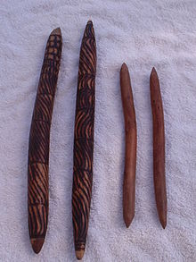

Clapsticks or clappers are a type of drumstick, percussion mallet or claves
that serve to maintain rhythm in Aboriginal voice chants. Unlike drumsticks,
which are generally used to strike a drum, clapsticks are intended for striking
one stick on another.
As an ancestral instrument that may traditionally accompany the didgeridoo, it
is sometimes referred to as musicstick or just Stick. In the language of the
Yolngu Aborigines of Northeast Arnhem Land, near Darwin, Australia these
clapsticks are called bimli.

Boomerang clapsticks:
Boomerang clapsticks are similar to regular clapsticks but they can be shaken
for a rattling sound and be clapped together.
Technique:
The usual technique employed when using clapsticks is to clap the sticks
together to create a rhythm that goes along with the song.